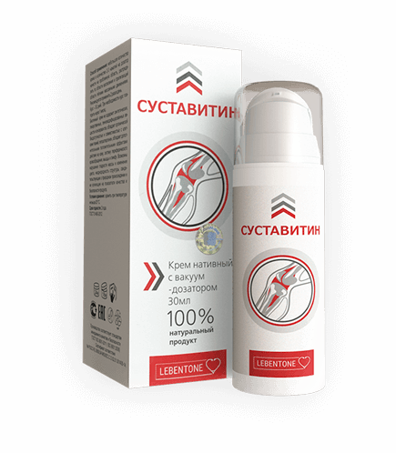
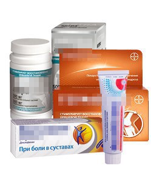

Вслед за Малаховым: Маслякова выгнали после шутки про суставную мафию
Эксклюзив: почему Эрнст вышвырнул Маслякова с первого канала вслед за Малаховым,при чем тут обвинение в коррупции, и где купить нашумевшее средство для лечения суставов за 39 руб..
Напомним, недавно разразился скандал вокруг увольнения Малахова. Эрнст просто убрал его с "Первого канала" за то, что он затронул в выпуске медицинскую коррупцию. Выпуск, так и не попавший в эфир, был о том, как врачи калечат людей с больными суставами, скрывая от них правду! И о препарате от НИИ Ревматологии им. В.А.Насоновой, который может спасти миллионы жизней, распространяясь при этом по символической цене в 39 руб.!
Не успел шум утихнуть, как скандал получил новый виток: СМИ стало известно об увольнении Маслякова с первого канала. Не удивительно, что корни увольнения Маслякова так же растут из истории с аптечной мафией и средством для суставов. Наши независимые корреспонденты встретились с Масляковым чтобы узнать, что же именно произошло на первом канале.
Корреспондент: "Александр Васильевич, могли бы вы напомнить нашим читателям историю с увольнением Андрея Малахова? Что там произошло у вас на первом канале?"
Масляков А.В.: Я расскажу вам, как дело было. Смотрите только со стула не упадите.
Андрей снял передачу про инвалидов, которые пострадали от больных суставов, потому что лечили их дорогими, но малоэффективными средствами. Андрей рассказал миру о существовании доступного средства, которое лечит артриты, артрозы, ревматизмы и другие болезни РАЗ и НАВСЕГДА.
Эрнст пришел в бешенство из-за того, что Андрей не согласовал с ним тему программы. В наказание Костя не просто не выпустил в эфир передачу, он уволил Андрея, вышвырнув его как щенка на улицу.
Эту историю на первом канале старались "замолчать", но благодаря сторонникам Андрея правда прорвалась в интернет и разошлась по нему. Я сам ранее не знал причины увольнения Андрея, прочитал в интернете, а потом встретился с Андреем лично, и он все это подтвердил.
Тут я понял масштаб коррупции первого канала! Раньше я не предавал значения тому, что даже в нашей, юмористической, передаче вносят корректировки в текст про аптеки и врачей. Теперь ужасная правда мне открылась.
Первый канал ПОЛНОСТЬЮ коррумпирован аптечной мафией, которая наживается на казахстанских пенсионерах. Они дают на первом канале рекламу средств от боли в суставах, которые стоят дорого, а по итогу приносят только временное облегчение, а не лечат! А самое страшное, что наши врачи знают, что уже изобретено и протестировано средство из НОВОГО ПОКОЛЕНИЯ, которое действительно ПОМОГАЕТ БОЛЬНЫМ СУСТАВАМ. Но их никто не слушает, рекламу средства не пускают в эфир, а само средство - на полки аптек!
Корреспондент: "Александр Васильевич, ваш уход тоже связан с этой историей?"
Масляков А.В.: Не просто связан, именно эта история послужила причиной. Я не ушел с первого канала, меня оттуда "ушли", как говориться. Уволили.
После беседы с Андреем Малаховым я страшно возмутился этой ситуацией, и попытался пропихнуть в новый выпуск КВН несколько очень едких шуточек про аптечные средства для суставов, которые вовсю рекламирует первый канал. Так сказать, чтобы люди хотя бы задумались немного, кому они верят, и что принимают.
Но сделать эту "диверсию" мне не дали. Эрнст мгновенно вызвал меня к себе, и заставил написать заявление "по собственному желанию".
Сказал, что ни я, ни Андрей не понимаем, что значит бизнес, а таким на первом канале не место. А то, что в стране у каждого после 40 начинаются боли в пояснице, руках, ногах, отеки, судороги, люди страдают, им тяжело ходить и нагибаться- это его не волнует. Нужно деражать на плаву канал и платить сотрудникам зарплаты, и главный заработок канала - именно реклама аптечных, бесполезных средств для суставов.
Корреспондент: "Но судя по громким заголовкам газет, история на этом не закончилась?"
Масляков А.В.: Вы имеете ввиду обвинение меня в коррупции? Да, это действительно происходит. Спустя два дня после увольнения, я получил повестку от следователя, где значилось, что в отношении меня выдвигают обвинение в коррупции. Вот это ирония!
Обвинение, разумеется, предъявил Эрнст. Поводом послужило то, что я высказался своих личных в соцсетях в поддержку Андрея Малахова, и дал ссылку на статью ревматолога Виктора Седельникова, который описывает новый, ДЕЙСТВИТЕЛЬНО РАБОЧИЙ препарат для суставов, выпущенный НИИ Ревматологии.
Эрнст пытался повернуть дело так, что НИИ Ревматологии дали мне взятку, чтобы я рекламировал их лекарство. К счастью, следователи не лишены здравого смысла, и уголовное дело воздуждено не было.
Поэтому теперь я могу без опасений высказываться по поводу произвола аптечной мафии на первом канале, и прошу вас привести часть интервью с ревматологом Виктором Седельниковым, вырезанным из той самой злополучной передачи Андрея Малахова.
Виктор Седельников, старший ревматолог НИИ Ревматологии им. Насоновой г.Москва:
"В большинстве случаев пациентам c болезнями суставов предлагают лечение хондопротекторами и иными препаратами, которые при самом хорошем результате могут затормозить развитие того или иного заболевания, не более того. В ряде случаев людей лечат уколами или при помощи хирургического вмешательства. В итоге человек не чувствует боли и считает, что у него всё в порядке, тогда как в организме уже может расти раковая опухоль. А операции на суставах вообще очень часто заканчиваются инвалидностью или иными тяжелыми осложнениями. Их показано проводить только в самых крайних случаях.
Именно по причине низкой эффективности классического подхода к лечению, умы специалистов всегда занимала разработка препарата, позволяющего действительно лечить больные суставы и возвращать людям здоровье. В НИИ ревматологии имени В.А.Насоновой мы создали первое в своём роде лекарство, которое способное дейстительно восстанавливать суставы.
Дело в том, что НИИ Ревматологии не занимается коммерческой деятельностью. НИИ распространяет его за чисто символическую цену в 39 руб., в рамках специальной программы.
"Суставитин" - уникальный препарат, у которого пока нет аналогов как за рубежом, так и в Казахстане.
На данный момент "Суставитин" прошёл клинические испытания и показал на них чрезвычайно высокие показатели эффективности. Он помогает даже в запущенных и тяжелых случаях, восстанавливая хрящевую ткань и возвращая суставы в здоровое состояние. По своим показателям лекарство уникально. Ни один другой препарат неспособен эффективно восстановить больные суставы, вернув человека в полностью здоровое состояние.
Для наглядности мы в НИИ Ревматологии составили таблицу сравнения Суставитин с популярными аптечными средствоми для суставов.
|  Суставитин™ |
 Известные гели и таблетки для суставов и спины |
|
|---|---|---|
| Цель: | возвращение суставам здорового состояния (решение проблемы навсегда) | Временное облегчение боли, маскировка болезни (покупатель нуждается в них постоянно) |
| Цена: | всего 39 руб. по акции от производителя | 13860-104000 тенге/месяц |
| Действие: | Устраняет боль и отёчность и воспаление Останавливает процесс разрушения Восстанавливает поврежденные хрящи костную поверхность |
Гели: временный анестезирующий эффект в области применения Таблетки: временный обезболивающий эффект |
| Дополнительные эффекты: | º Защищает суставы º хрящевую ткань опорно двигательного аппарата º Увеличивает подвижность суставов, повышает допустимую физическую нагрузку |
Отрицательный эффект: скрывают течение болезни |
| Побочные эффекты, вред для организма, противопоказания | Отсутствуют | º Расстройства пищеварительной системы, центральной нервной системы, кровеносной системы. Нарушение работы почек, печени и кишечного тракта. Могут наблюдаться аллергические реакции |
| Принцип работы: | Снимают боль через остановку воспаления и остановку течения болезни. Восстанавливают хрящевую ткань и поверхность костей, защищают суставы | Временно обезболивают за счет содержания анестезирующих веществ в составе |
| Место в рейтинге продаж в Европе за 4 квартал 2017 г: | 1 (+53) | отсутствуют на рынке |
| Гарантия: | В Казахстане действует 365 дневная (1 год) — гарантия от производителя: заявленный результат или возврат средств (подробнее) | Отсутствует |
Дело в том, что НИИ Ревматологии не занимается коммерческой деятельностью. НИИ распространяет его за чисто символическую цену в 39 руб., в рамках специальной программы. Не смотря на высокую должность, я не имею влияния на коммерческие аптечные сети. Всё, что я могу сделать - это рекомендовать препарат. Я от всей души рекомендую всем "Суставитин". Собственно всё научное сообщество понимает, какой колоссальный прорыв в области лечения суставов был совершен. К моему глубокому сожалению, аптечные сети не среагировали, поэтому Суставитин на прилавках аптек так и не появился. Думаю, секрет в том, что аптекам выгоднее продавать временное облегчение, а не панацею."
Что же делать людям, если препарат не продают аптеки?
Мы нашли выход из положения - специалисты НИИ своими силами создали специальный сайт на котором можно оставить заявку на "Суставитин" и получить его за 39 руб.. Всё, что нужно сделать - это просто оставить свое имя и контактные данные. После этого с вами свяжутся для уточнения удобного времени доставки. Мы постарались сделать все максимально просто, чтобы каждый мог получить лекарство, даже если раньше ничего не заказывал через Интернет.
ПОЛУЧИТЬ Суставитин ЗА 39 руб.
Масляков А.В.: По-моему вопрос исчерпан. Аптеки предлагают устаревшие и опасные лекарства, при этом скрывая от людей правду о новом препарате, который распространяется за счет бюджета. Выводы делайте сами. Это ваше здоровье и только вы за него в ответе. До свидания!